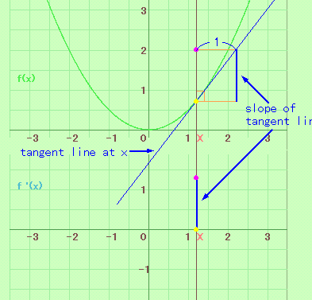

Derivative of y=x
2
Introduction
The figure in the right shows the tangent line of the graph at x.
The slope of tangent line is the derivative.
Therefore the locus of the slope is f'(x).
Reference:
Surfing(Derivatives)

Applet